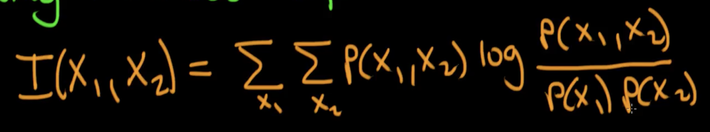

Definitions
- Conceptual Definition: MI is the reduction in uncertainty when predicting one variable (“outcome”) in a system, if we know the value of another variable in the system.
- It will always be >=0, and higher values mean higher dependency between the two variables
- Formula (for discrete processes/variables X1 and X2):

- As must be apparent, for two independent variables, MI = 0. Eg. Two coins are tossed; the results of one coin do not help us measure the results of the other in any way
- Another way to look at this (and I still have some trouble wrapping my head around this) is that MI is the KL Divergence in going from the joint distribution P(X1, X2) to the product of the marginal distributions P(X1).P(X2)(derives from the formula of KL Divergence)
- i.e. the informational cost in representing our system as the product of marginals opposed to the full joint distribution
MI can be used for feature selection, and scikit-learn implementation of MI for both regression and classification problems exists.
MI results can be used to select the K-best features/K-percentile features, and their site gives the explicit instruction that “treating a continuous feature as discrete and vice versa will usually give incorrect results, so be attentive about that.” A comparable method of univariate feature selection (i.e. selection based on univariate statistical tests) is the F-test method - based on a quick linear model for testing the effect of a single regressor, sequentially for many regressors, and using it to get F-stats and p-values for each feature. However, mutual information can capture any kind of dependency between variables whereas the F-test captures only linear dependency.
Sources